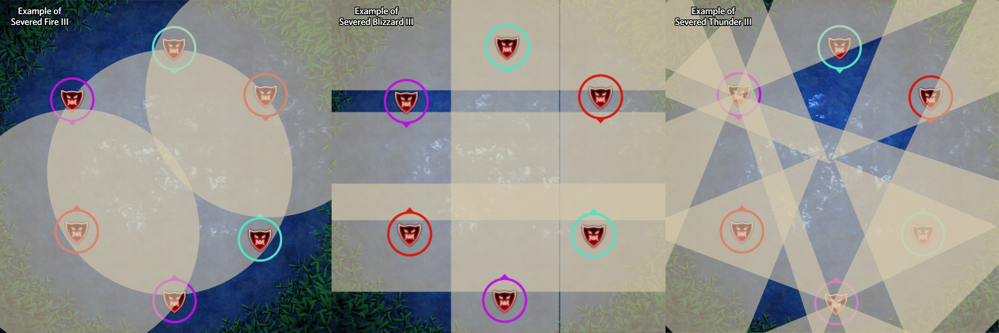
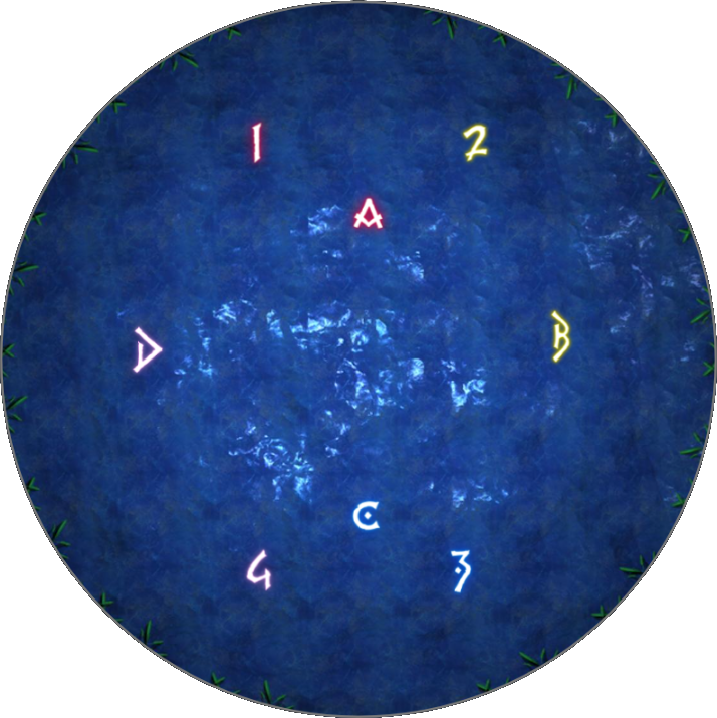

Necrophobia
"The nature of immortality has been studied throughout history, dating as far back as the Allagan Empire, and the Fifth Astral Era was no exception. Surviving records detail myriad experimental approaches based not just in healing magicks, but even the forbidden art of necromancy. It would seem this entity was one of countless mages driven by the fear of death to seek eternal life. Yet in exchange for physical resilience, the soul was lost, producing little more than a mindless automaton bent on destroying all living beings."
Overview
The encounter centers around reading elemental head patterns and debuff colors: position opposite the Intercardinal Ice head during Death Shroud, stack near C to bait Dark Current Exa-lines, and continuously step into opposite-color half-cleaves during Fertile Ground to alternate debuffs and prevent Ruin stacks.
Simulator
You can find a simulator for the core mechanics here.
Fight Timeline
Death Shroud 1
The boss spawns six heads around himself (two Ice, two Lightning, and two Fire) that travel to fixed spots across the arena in order: Ice heads first, Lightning heads second, and Fire heads last. The boss then cycles through all three elements, triggering matching heads to unleash AoEs simultaneously with the boss.
- Elemental AoE Shapes:
- Ice: Plus-shaped AoE extending along cardinal directions from the head.
- Lightning: Intercardinal cone AoE.
- Fire: Large circle AoE.
- Finding Your Home Base:
- Locate the Intercardinal Ice head (there will also always be an Ice head directly North or South).
- Move directly opposite the Intercardinal Ice head. This location is your home base for the mechanic.
- Identify whether the head arriving at your home base is Fire or Lightning.
- Dodging Each Wave:
- Ice Phase: Stand on the head at your home base or tightly against its sides. Keep as close to the side of the head as possible, as the safe zone is a very narrow slice. Avoid standing directly in front of or behind the head.
- Fire Phase: Move behind the head immediately to your left or right. If your home head is Fire, step a bit further out to clear the large circle explosion.
- Lightning Phase:
- If your home head is Lightning: Move to the nearest cardinal with a head and stand directly in front of it.
- If your home head is Fire: Move to the nearest cardinal without a head.

Dark Current & Vacuum Wave
The boss combines traveling Exa-line AoEs with a frontal cleave and center line head attacks across the arena.
- Dark Current (Exa-lines):
- Dark Current spawns initial line AoEs that continuously step forward in sequence.
- Dodge the initial line telegraph, then step into the space left behind as the wave moves outward.
- These lines are baited on a random player. Stacking together near the C waymark keeps the bait predictable and easy to dodge.
- Center Line Heads:
- A row of heads spawns across the middle of the arena, executing line AoEs directly in front of them.
- Position yourself directly behind a head to remain safe while dodging Dark Current waves.
- Vacuum Wave:
- Directly following Dark Current, the boss unleashes a large frontal cleave AoE. Step behind the boss to dodge it.
Death Shroud 2
[placeholder]
Fertile Ground
The boss deals a heavy raidwide and inflicts each player with one of two debuffs that must be continuously swapped across eight sequential head cleaves:
- Initial Debuffs:
- Growing Dread: Blue triangle debuff.
- Growing Panic: Pink hexagon debuff.
- Head Spawn & Resolution Order:
- Eight heads travel one by one to the outer perimeter, defining their exact explosion order:
- Heads 1 to 4: The 1st head goes to a cardinal or intercardinal position. Heads 2 through 4 follow sequentially clockwise or counter-clockwise.
- Heads 5 to 8: The 5th head goes to the opposite position type (intercardinal if 1st was cardinal, or vice versa). Heads 6 through 8 follow clockwise or counter-clockwise.
- Eight heads travel one by one to the outer perimeter, defining their exact explosion order:
- Debuff Swapping Rule:
- Each head cleaves its respective half of the room with a Blue and a Pink element.
- Stand on the side displaying the opposite color of your current debuff (e.g. if holding Blue, get hit by Pink).
- Getting hit by the opposite color successfully swaps your debuff to the other color. Repeat this process for all eight heads. Getting hit by matching colors inflicts Ruin stacks.
- Simultaneous Elemental Attacks:
- On the 3rd, 5th, and 7th head explosions, the boss simultaneously casts Ancient Fire, Blizzard, or Thunder III AoEs.
- Adjust your position to dodge these elemental spells while maintaining correct debuff color positioning.
Waymarks
Below is the waymark setup used for this encounter.
